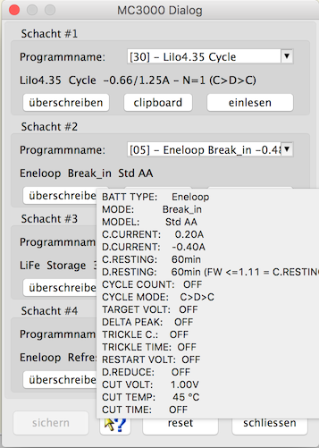
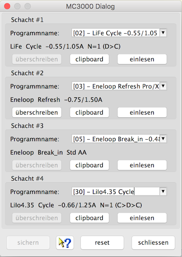

Für das MC3000 gibt es zwei Gerätebeschreibungen. Ein gewähltes MC3000-Set legt alle aufgenommenen Datensätze in einer Datei ab. Es ist sinnvoll hier die kontinuierliche Aufzeichnung in den Einstellungen zu wählen. Das hilft, um den Überblick zwischen Datensatz und Schacht zu behalten. Im Fall von vier gleichzeitig geladenen Akkus erhält man dann für jede Zelle einen Datensatz und alle vier Datensätze werden in einer Datei gesichert. Ein MC3000 behandelt alle Schächte unabhängig voneinander, die Akkus haben also keinen Zusammenhang und werden nicht gemeinsam verwendet. Deshalb entsteht bei der Sicherung pro Schacht eine Datei.
Der gezeigte Gerätedialog dient zur Konfiguration der vier Schächte mit temporären Programmspeichern, die aus zuvor auf dem Gerät abgespeicherten und anschließend mit Hilfe dieses Gerätedialogs gesicherten Programmen gebildet werden. Das Anlegen einer Sicherungskopie der Geräte-Programmspeicher macht Sinn, da diese spätestens nach einem Geräte-Reset oder durch ein Firmware-Update auf dem Gerät verloren gehen. Der DataExplorer legt beim Speichern automatisch eine mit bis zu 30 belegbaren Plätzen breite Datenbank ab, die ebenso automatisch beim Aufrufen des Gerätedialogs direkt zur Verfügung steht. Viele Elemente in diesem Dialog sind mit einem Tooltip versehen, der dem Benutzer hilft deren Funktion zu erklären.

Für jeden Schacht werden die charakteristischen Merkmale des aktuell dem Benutzer zur Verfügung stehenden Programms in Kurzform unterhalb des Aufklappmenüs angezeigt. Er kann dann entweder dieses Programm einem der 30 Sicherungsplätze zuordnen (Aufklapp-Menü) und es dabei auch umbenennen, oder es für das temporäre Überschreiben auf den Schacht übertragen (überschreiben), oder seine vollständigen Programmeinstellungen im Detail einfach nur betrachten. Letzteres, die Detail-Liste, wird einerseits als Tooltip, indem man mit dem Mauszeiger über jene Kurzform fährt, angezeigt. Andererseits ließe sie sich auch in den Zwischenspeicher kopieren (clipboard). Damit kann man sich durch systematisches Einfügen in eine separate Text-Datei eine eigene Programm-Datenbank mit ausführlicheren Beschriftungen und Beschreibungen aufbauen. Für eine z.B. zur Umschreibung des zu sichernden Programmspeichers neue Benennung kann man bis zu 35 Zeichen verwenden, im nächsten Schritt sollte die getätigte Eingabe dann gespeichert werden (sichern). Der eigenen Übersicht ist es dienlich und sinnvoll, ein auf dem Gerät unter einer bestimmten Programmnummer abgespeichertes Programm unter derselben Platznummer in der Datenbank zu sichern.

Hinweis: Der Reset-Knopf (reset) bringt die initial beim Aufrufen des Dialogs automatisch eingelesenen Programmspeicher zurück und überträgt diese auch zurück auf die Schächte. Ob ein welches Programm, ein Programmspeicher, in der Tat erfolgreich übertragen worden ist, lässt sich auf dem Gerät nur bedingt, je nach Geräte-Einstellung samt Kurzform, erkennen, und zwar nur wenn ein Akku im betreffenden Schacht eingelegt liegt. Eine vollständige visuelle Überprüfung der übertragenen Programm-Parameter kann nur über diesen Dialog vorgenommen werden (clipboard), auf dem Gerät selbst besteht leider keine weitere Möglichkeit der vollständigen Überprüfung. Der Tooltip ist der Übersichtlichkeit halber gegenüber dem Clipboard Inhalt in der Form bereinigt, dass alle nicht einstellbaren Parameter weggelassen wurden. Der Benutzer ist selbst dafür verantwortlich, dass nach dem Verlassen des Dialogs (schliessen) und beim Starten der Aufnahme (Start Aufnahme) der zum Programm passende Akku im Schacht liegt. Nach dem Starten des Programms zeigt dann das Gerät die Zustandsgrößen wie gewöhnlich an. Der Benutzer ist selbst dafür verantwortlich, dass nach dem verlassen des Dialogs und ein Starten der Aufnahme der zum Programm passende Akku im Schacht liegt. Nach dem Starten des Programms zeigt dann das Gerät die Parameter wie gewöhnlich an.